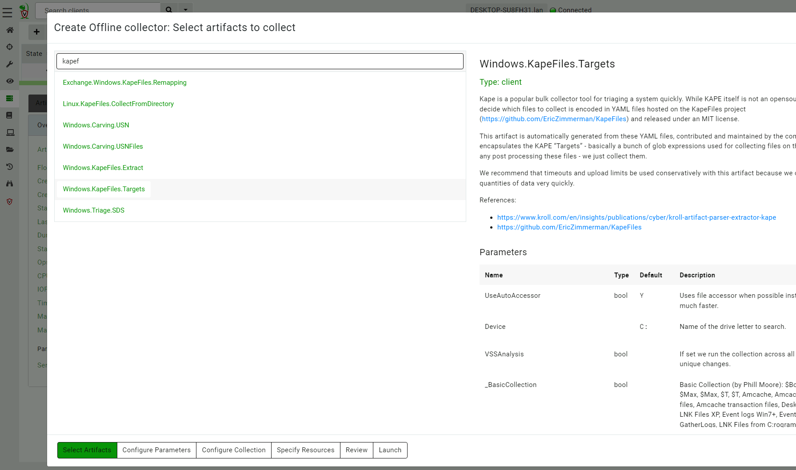

<!-- .slide: class="content " --> ## Collecting files * Being able to efficiently and quickly collect and preserve evidence is important: * Capture machine state at a point in time. * Collect files for further analysis by forensic tools. --- <!-- .slide: class="content " --> ## Windows.KapeFiles.Targets * This is a popular artifact for mass file collection. * It does no analysis but just collects a bunch of files. * Uses low level NTFS accessor * More "Traditional" DFIR. --- <!-- .slide: class="content small-font" --> ## Exercise: Use Windows.KapeFiles.Targets * Simply select the target to collect. * Many targets automatically include sub-targets.  --- <!-- .slide: class="content small-font" --> ## Exporting collections from GUI * You can use the GUI to export the collection 1. Can specify a password for export 2. Can re-import the collection into another server (archive) <img src="exporting_collection_zip.png" style="height: 300px"/> --- <!-- .slide: class="content " --> ## Resource control * Collecting large artifacts can generate huge amount of data * Because Velociraptor is so fast and efficient it is easy to accidentally overwhelm networks * Math is a harsh mistress: * Collecting 100Mb from 10,000 endpoints = 1Tb * e.g. $MFT is usually around 300-400Mb --- <!-- .slide: class="full_screen_diagram" --> ### Velociraptor has your back! <img src="resource_control.png" style="height: 400px"/>